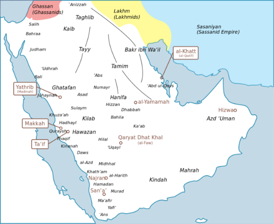
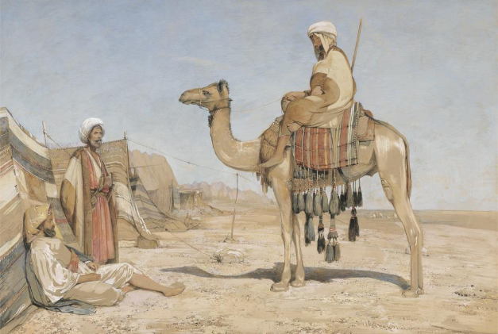

After the rise of Islam, it became the dominant religion in the Middle East.
Before that there were many different religions that were practiced in the middle east. Today we are going to talk about the three biggest groups: Christianity, Zoroastrianism, and local Polytheism.
1. The Arabians


The Arabians
Polytheism (Also Jews and Christians)
Not one system of belief but many different religions with different gods.
More than 360+ gods
Hubal & Athar
Worship through veneration (respect) of idols (statues)
Nomadic - moving around, not living in one place
2. The Persians (Sassanids)

 figures ]%3C/text%3E%3C/svg%3E)
The Persians (Sassanids)
Zoroastrianism
Monotheist
Believed that the world was in a spiritual war between good/light (Asha) and evil/darkness (druj).
Worship God through veneration of holy/clean elements like water, fire.
Hated the greeks
3. The Romans (Eastern Roman Empire)


The Romans (Eastern Roman Empire)
Culturally Greek, spoke Greek etc.
Politically they were Romans
Eastern Orthodox Christianity
Use fluffy bread in church.
Priests wear black robes/beards